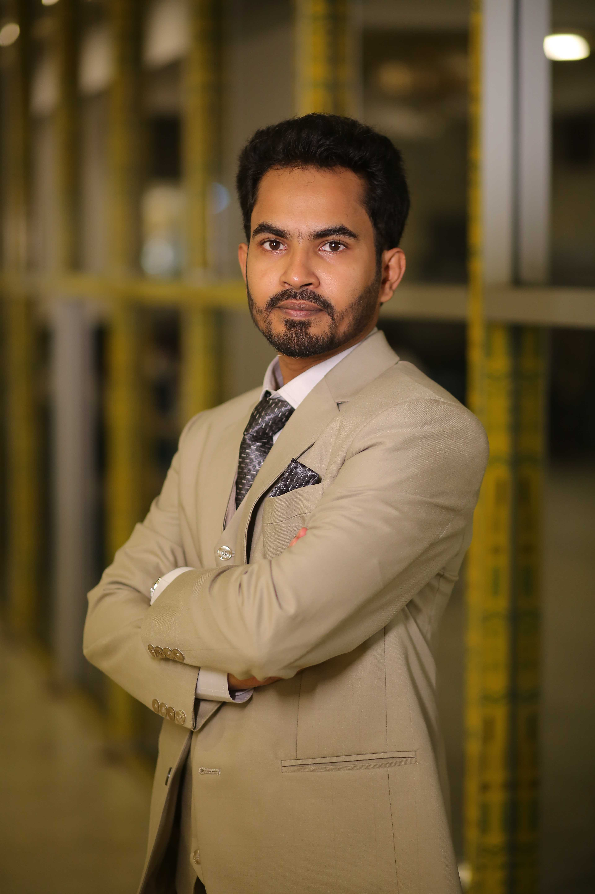
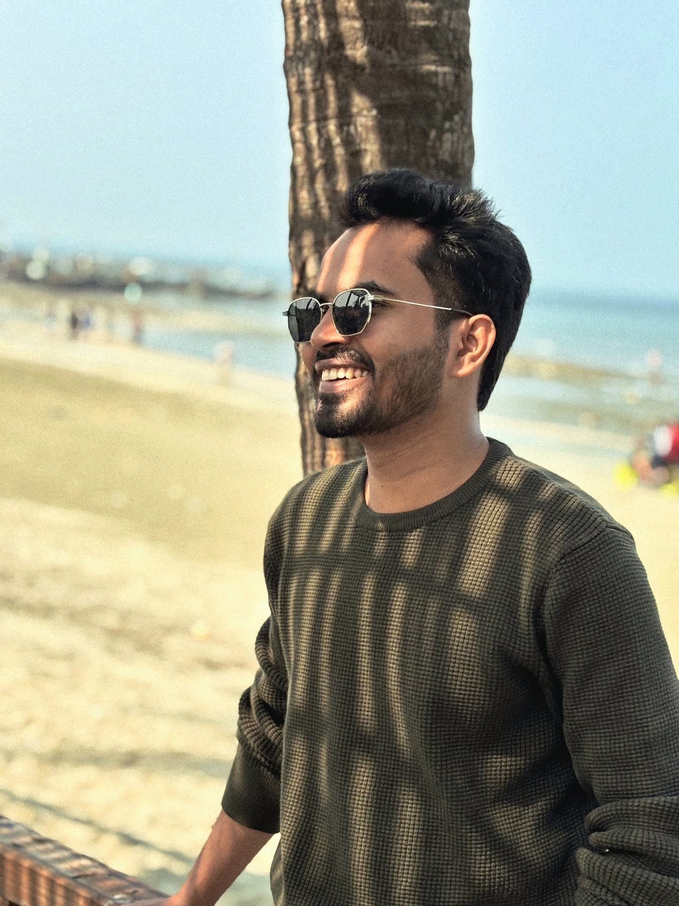

QA Engineer on the Platform & Partners team at Ding, an international fintech company behind DingMoney, Top-Up, and Vouchers. Backend, frontend, and API testing, root-cause analysis, and CI/CD automation by day. Off the clock: writing, painting, film, and collecting coins & postage stamps with better stories than most people's vacations.


I build confidence in software by uncovering what others overlook. The same curiosity follows me beyond engineering—into writing, painting, filmmaking, psychology, and collecting pieces of history.
I don't see these as separate identities. They're different ways of exploring the same question: How do people, systems, and stories truly work?
This website is a map of that exploration—a place where code meets creativity, logic meets emotion, and every project reflects another way of seeing the world.
I don't think of these as separate careers or hobbies. They're different expressions of the same instinct—to observe deeply, understand honestly, and create something meaningful from what I find.
Whether I'm tracing a bug through logs, writing a psychological novel, painting a quiet street, or studying human behavior, I'm ultimately asking the same question:
What lies beneath the surface?
I build confidence in software by uncovering what others overlook. From backend APIs and fintech systems to CI/CD pipelines and production logs, I enjoy following small inconsistencies until they reveal the larger story. To me, quality isn't just testing—it's understanding complex systems.
Explore → 02Writing is where observation becomes memory. I write novels, essays, poetry, journals, and reflections that explore identity, grief, memory, relationships, and the quiet questions people carry throughout their lives. My stories rarely begin with a plot—they begin with a feeling that refuses to leave.
Current work: অভ্যন্তর, a psychological novel about trauma, memory, and the fragile architecture of identity.
Explore → 03Some emotions arrive before language does. Watercolor, ink, photography, and illustration help me explore those moments that words cannot completely describe. I'm drawn to atmosphere, silence, imperfect textures, and ordinary scenes that reveal extraordinary feelings when observed patiently.
Explore → 04Film combines everything I love—writing, visuals, sound, rhythm, and human emotion. I enjoy creating stories that linger after the screen goes dark, where quiet moments often speak louder than dialogue. Every frame is another way of asking people to pause and notice.
Explore → 05I'm fascinated by the invisible systems behind people—the way memory shapes identity, how trauma alters perception, why habits form, and how emotions quietly influence our decisions. Psychology isn't just something I read; it influences how I write, design, test software, and understand the people around me.
Explore → 06I collect coins because every object carries a history beyond its material worth. That same curiosity extends into AI, philosophy, software architecture, design, history, and anything that helps me see the world from another perspective. Learning isn't a destination—it's the thread connecting everything I create.
Explore →QAing, paintings, and writing — different mediums, same instinct.
Open to conversations about QA, product, or anything from the other sections.
Say hello →